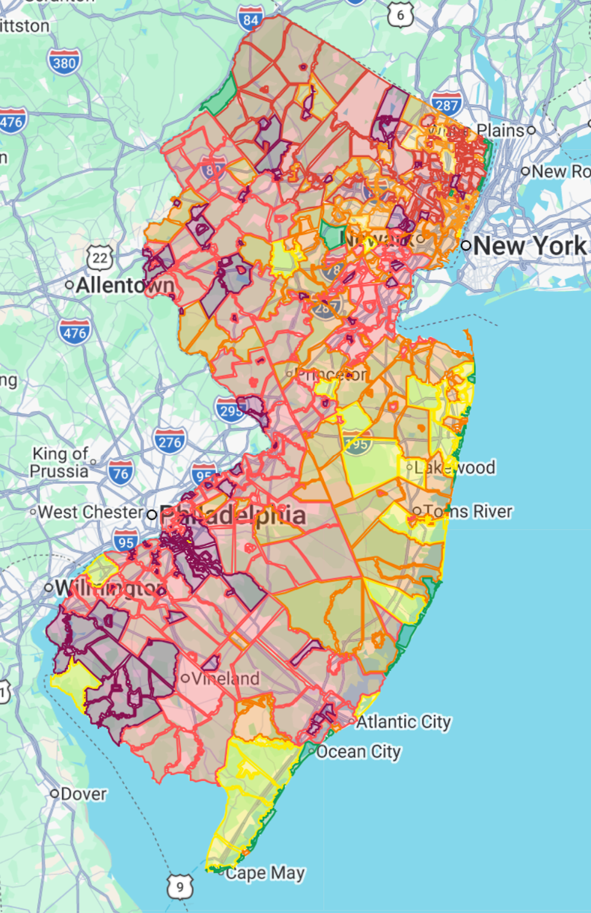
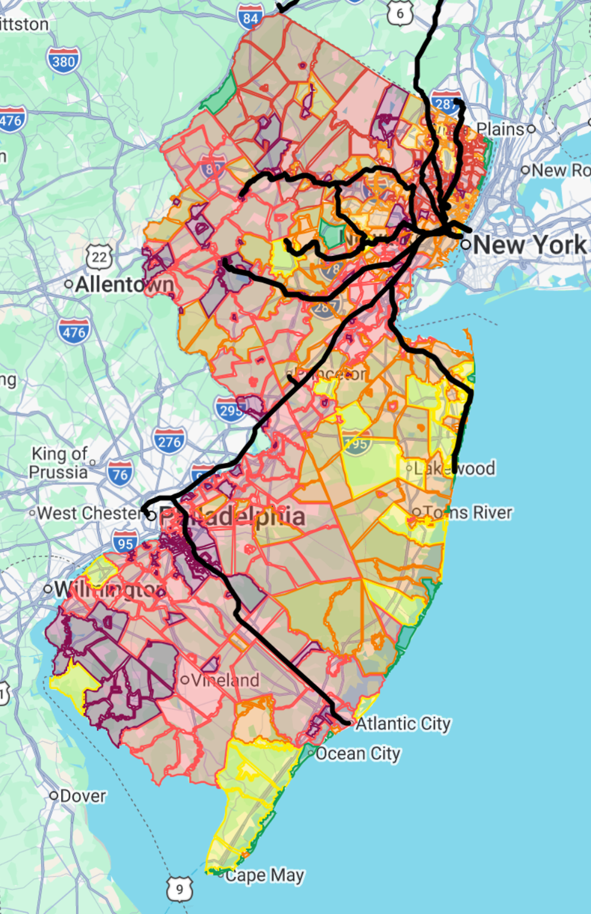
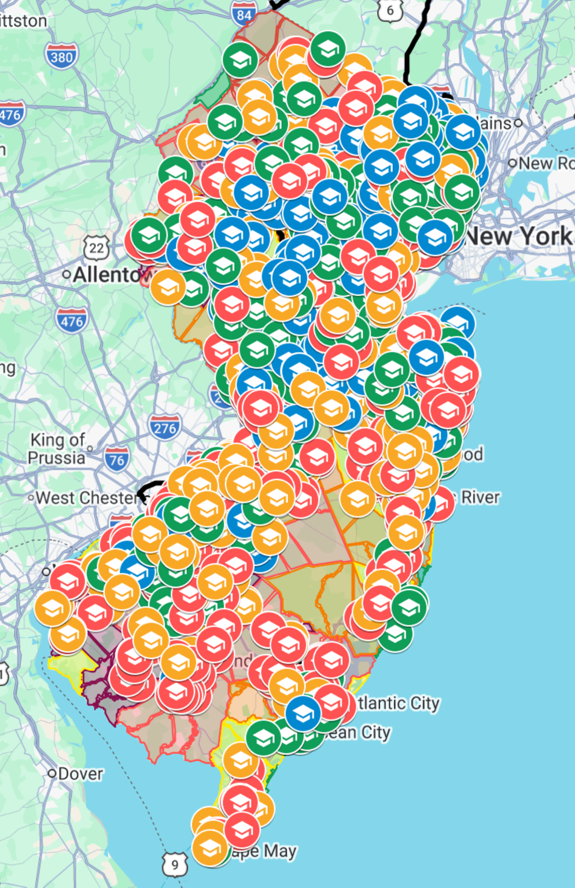

Free 30-Minute NJ Homebuyer Strategy Session
Find the New Jersey neighborhoods that offer you the most value.
Zillow helps you search listings. I help you decide where to search.
How we narrow your search
Stop guessing where to look.
Most buyers compare homes one at a time and can waste weeks looking in towns that do not actually fit their budget, commute, taxes, schools, or lifestyle priorities.
The same budget can buy very different homes in different towns. With a $5,000 monthly housing budget, a $50,000 down payment, and a 30-year mortgage at 6.5%, you could afford approximately:
Orange$500k
Livingston$600k
Spring Lake$700k
That's why choosing where to search can be just as important as choosing which home to buy.
Estimates vary by loan terms, rates, taxes, insurance, and lender approval.



How it works
Walk away with a clearer plan for where to buy in New Jersey.
Tell me what's important
Budget, commute, timing, lifestyle, school priorities, and target areas.
Get your personalized town short list
We narrow your search to the towns and tradeoffs that make the most sense.
Move forward with confidence
You'll leave with a clearer plan for your home search, and, if needed, an introduction to a trusted local buyer's agent.
Why this is free
No cost to you
I do not charge buyers for strategy sessions. If you choose to work with an agent I introduce and eventually purchase a home, I may receive a referral fee from that agent's commission.
I have built location-planning tools professionally for over a decade, and now use similar methods to help New Jersey buyers compare towns, taxes, school-area considerations, commute patterns, and affordability tradeoffs before entering the market.
My goal is simple: help you build a smarter search before you start touring homes.
Book now
Schedule My NJ Buying Strategy Session
Pick a time directly below. No buyer fee, no obligation.
Ready to narrow your NJ search?
Book a free strategy session and leave with a clearer town-by-town game plan.
Schedule Session